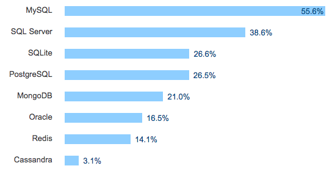

Databases and Developers
SELECT * FROM exciting_knowledge;
First off
Ask questions
at any time!
Who am I?
Kyle Tolle
Software Engineer on Sabbatical
Not a database expert
but I want to
share
some of what
I’ve learned
Slides for this talk
Presentation:
https://kyletolle.github.io/dbs_and_devs_talk
Code:
Past Jobs
- tools supporting satellite simulation
- ICBM command and control system
- geospatial data collection
- mobile wallet applications
Overview
- Background
- ORMs
- DB Theory
- Important Concepts
Let’s start at
The Very Beginning
Humans are
knowledge-hunters
&
data-gatherers
We like to
- Collect data
- Store it
- Process it
Software crunches
data
Data needs
a home
a.k.a.
A Data Store
Data’s earliest home
The Flat File
cat students.csv
Id, Name, Grade
1, Ted, B
2, Stan, A-
3, Fred, C++
4, Ned, 5%
Easy peasy
Some things don’t need to be complicated
Flat Files
can be used for
Data Interchange
Common flat file types
- CSV
- HTML
- XML
- JSON
- ini
- conf
Then, things grow
Complicated
Want to
- know more
- ask questions
- give access
Use the data for
- Web application
- Report generation
- Analysis performation
Fortunately for us,
some smart folks
invented the
database
Popular DBs according to Devs

https://insights.stackoverflow.com/survey/2017#technology-databases
Many common DBs use the
Relational Model
 *
*
*: By User:AutumnSnow - Own work, CC BY-SA 3.0, Link
In other words, we have a
Table
with
Rows & Columns
SQL is a DSL
for managing data in a
Relational DB
Remember our student data?
Id, Name, Grade
1, Ted, B
2, Stan, A-
3, Fred, C++
4, Ned, 5%
Put a database on it!
students
| id | name | grade |
|---|---|---|
| 1 | Ted | B |
| 2 | Stan | A- |
| 3 | Fred | C++ |
| 4 | Ned | 5% |
The table has a schema.
Each row is a record.
Each column is an attribute.
Let’s drop into
Postgres
Set up Postgres
brew install postgres
brew services start postgresql
createdb dbs_and_devs_talk
psql dbs_and_devs_talk
Create a Table
CREATE TABLE students(
id SERIAL PRIMARY KEY,
name TEXT NOT NULL,
grade TEXT NOT NULL
);
Insert Data
INSERT INTO students (name, grade) values ('Ted', 'B');
INSERT INTO students (name, grade) values ('Stan', 'A-');
INSERT INTO students (name, grade) values ('Fred', 'C++');
INSERT INTO students (name, grade) values ('Ned', '5%');
View Data
SELECT * FROM students;
id | name | grade
====+======+=======
1 | Ted | B
2 | Stan | A-
3 | Fred | C++
4 | Ned | 5%
(4 rows)
Create a Relationship
CREATE TABLE backpacks(
id SERIAL PRIMARY KEY,
color TEXT NOT NULL,
student_id INT references students(id)
);
Insert Data
INSERT INTO backpacks (color, student_id) values('blue', 1);
INSERT INTO backpacks (color, student_id) values('red', 2);
INSERT INTO backpacks (color, student_id) values('grey', 3);
INSERT INTO backpacks (color, student_id) values('green', 4);
INSERT INTO backpacks (color, student_id) values('clear', 1);
View Data
SELECT * FROM backpacks;
id | color | student_id
====+=======+============
1 | blue | 1
2 | red | 2
3 | grey | 3
4 | green | 4
5 | clear | 1
(5 rows)
Backback colors for a Student
SELECT color FROM backpacks WHERE student_id = 1;
color
=======
blue
clear
(2 rows)
Backpacks for all students
SELECT s.name, b.color FROM students as s
JOIN backpacks as b ON s.id = b.student_id
ORDER BY s.name;
name | color
======+=======
Fred | grey
Ned | green
Stan | red
Ted | blue
Ted | clear
(5 rows)
Quit Postgres
\q
Do stuff
the hard way
for a while
Allows you to understand
- the benefits of your tools
- the limits of your tools
- how to work around those limits
Plus, learn to
channel your anger
Useful Tools
ORM
Object-Relational Mapping
Maps
database records
to
object instances
Ruby on Rails
follows the
Active Record pattern
Install Ruby
brew install rbenv
rbenv install 2.4.2
rbenv global 2.4.2
Ensure SQLite3 is installed
sqlite3 --version
Install Rails
gem install rails
rails --version
We expect to see Rails 5.1.4
Create Rails app
rails new blog
cd blog
Create Posts
rails generate scaffold Post title:string body:text
class CreatePosts < ActiveRecord::Migration[5.1]
def change
create_table :posts do |t|
t.string :title
t.text :body
t.timestamps
end
end
end
Run db migration
rails db:migrate
Enter Ruby console
rails console
ActiveRecord is a DSL
We can modify SQL data with it
Create a new post
Post.create title: 'First!', body: 'Viral to the max.'
The console shows us
SQL queries
for various
ActiveRecord methods
Output for create
(0.1ms) begin transaction
SQL (0.4ms) INSERT INTO "posts"
("title", "body", "created_at", "updated_at")
VALUES (?, ?, ?, ?)
[
["title", "First!"],
["body", "Viral to the max."],
["created_at", "2017-11-29 01:37:50.231847"],
["updated_at", "2017-11-29 01:37:50.231847"]
]
(0.7ms) commit transaction
=> #<Post id: 1, title: "First!",
body: "Viral to the max.",
created_at: "2017-11-29 01:37:50",
updated_at: "2017-11-29 01:37:50">
Let’s break it down
- Transactions
- Queries
- Duration
- Conventions
Transactions
(0.1ms) begin transaction
...
(0.7ms) commit transaction
Multiple queries either
all happen
or
none happen
An error in a query causes a
Rollback
Provides protection from
Errors
causing
Inconsistent Data
Important when
modifying many records
in
one logical change
Queries
SQL (0.4ms) INSERT INTO "posts"
("title", "body", "created_at", "updated_at")
VALUES (?, ?, ?, ?)
[
["title", "First!"],
["body", "Viral to the max."],
["created_at", "2017-11-29 01:37:50.231847"],
["updated_at", "2017-11-29 01:37:50.231847"]
]
Dynamically generated
ActiveRecord analyzes the table and
generates the correct query
Duration
SQL (0.4ms) INSERT INTO "posts" ...
ActiveRecord measures
how long
each query takes to run
Can help
profile queries
and find slow ones
Conventions
Naming
Table name (posts) is pluralized
Class name (Post) is singular
Handles
complex cases
like
people & Person
Timestamps
Notice the
updated_at & created_at
columns?
ActiveRecord automatically tracks
creation & modification
times of each record
Other Examples
Viewing
post = Post.last
SELECT "posts".* FROM "posts"
ORDER BY "posts"."id" DESC LIMIT ? [["LIMIT", 1]]
=> #<Post id: 1,
title: "First!",
body: "Viral to the max.",
created_at: "2017-11-29 01:37:50",
updated_at: "2017-11-29 01:37:50">
Using
post.title
=> "First!"
post.updated_at
=> Wed, 29 Nov 2017 02:31:07 UTC +00:00
Counting
Post.count
SELECT COUNT(*) FROM "posts"
=> 1
Destroying
Post.destroy_all
SELECT "posts".* FROM "posts"
DELETE FROM "posts" WHERE "posts"."id" = ? [["id", 1]]
Just a sample
This is not an exhaustive list
Exit Rails Console
exit
Add a Column to Post
rails g migration AddCurrentSongToPosts current_song:string
class AddCurrentSongToPosts < ActiveRecord::Migration[5.1]
def change
add_column :posts, :current_song, :string
end
end
Migrations support
rolling back schema
rails db:rollback
Create a Relationship
rails g model like post:references
class CreateLikes < ActiveRecord::Migration[5.1]
def change
create_table :likes do |t|
t.references :post, foreign_key: true
t.timestamps
end
end
end
- Adds indexes for
post_id
Complex Relationship
An author can publish many posts, and
a post can have many authors
Complex Relationship, cont.
rails g model author name:string email:string
class CreateAuthors < ActiveRecord::Migration[5.1]
def change
create_table :authors do |t|
t.string :name
t.string :email
t.timestamps
end
end
end
Complex Relationship, cont.
rails g migration CreateJoinTableAuthorsPosts author post
class CreateJoinTableAuthorsPosts < ActiveRecord::Migration[5.1]
def change
create_join_table :authors, :posts do |t|
# t.index [:author_id, :post_id]
# t.index [:post_id, :author_id]
end
end
end
Even Complexerer
Sometimes the join tables are more complex
- Give the concept a name, like
Publications - Treat it like a model itself
- Consider needing additional data, like a
primary_authorboolean attributeroyalty_earnedmoney attribute
- Use Timestamps to know when changes happen
Quick detour into
Database Theory
ACID
A single DB can provide
- Atomicity
- Consistency
- Isolation
- Durability
CAP Theorem
In the event of a network failure,
a distributed DB must choose between
- consistency
- availability
BASE
Some distributed DBs prioritize availability.
Eventually, all the data will be consistent.
- Basically Available
- Soft state
- Eventual consistency
Other Topics
ORMs
support multiple databases through
DB Adapters
ORMS
generate queries on the fly, so
are slower than hard-coded queries
ORMs
inflate objects with
data from the DB, which
isn’t ideal for bulk work
Alternate SQL Library
like sequel for Ruby
might be more performant
N+1 Query Explosions
ORMS may lazily fetch data, resulting in
1,000+1 queries for
1,000 posts by 1 author
Primary Key
Key (like id) that uniquely identifies this record
No two records have the same primary key
Foreign Key
Key (like post_id) that uniquely identifies
some other row in a different table or in this table
Why reference a row in the same table?
To allow parent-child relationships
Indexes
Can speed up lookups, but
require extra space on disk and
slow down writes
Sanitization
Never trust user input
SQL injection can cause your DB to be hacked
Some ORMs may sanitize some data by default
Responsibility falls on you
to ensure data is sanitized
before entering your system
Permissions
Some users might only need read-only access
Review DB permissions to reduce risk of accidental
deletion or modification
Normalization
Removing duplication across tables
Normal Forms
Constraints
- primary key
- foreign key
- not null
- unique
Migrations
Changing the database schema as your needs change
Migrations, cont.
- Migrating the database by hand is tricky
- Need to be consistent
- Need to do it across many machines (many developers)
- Need to do it differently in different environments
- PRD has multiple DBs whereas DEV has one local DB
Migrations, cont.
- Take databases offline
- Can make changes that would break your application
- Keep databases online
- Have to make sure old version of app works with new DB schema
- Might have to make multiple deployments
Migrations, cont.
To keep the db online and rename a column:
- First deploy
- Duplicate column
old_nameto one callednew_name - Add code that updates
new_nameas well asold_name
- Duplicate column
Migrations, cont.
- Second deploy
- Change all code references from
old_nametonew_name - Remove now-unused column
old_name
- Change all code references from
Data integrity
Application-level integrity vs Database-level integrity
- Database can enforce referential integrity
- Post exists when creating a like
- Application can enforce higher-level things
- Only a person with specific permissions can modify this post
Locks
Adding a non-null column to a large table
can lock the table
and prevent reads or writes
Locks, cont.
To prevent a long table lock:
- Add a column that allows null values
- Table is only locked for a short time
- Update each row to have a default value
- This will lock each row for a short time
- Update the column to not allow null values
- Since each column already has a value, the lock is released quickly
Scaling
- Vertical
- Faster CPUs
- More Memory
- More Disk Space
- Caching
- Partitioning data across tables
Scaling, cont.
- Horizontal
- Load balancing
- Create a pool of nodes
- Add more nodes to the pool
- Sharding data across nodes
Scaling, cont.
Fault tolerance
If one node goes down,
another can still serve requests
Recovery
Make regular backups of databases
Recovery, cont.
Have a restore process
Try out the restore process
to make sure it works!
NoSQL DBs
Other topics to consider
- Data Types
- Views
- Triggers
- Full text search
- Security
Other topics to consider, cont.
- Stored Procedures
- Reports/Analytics
- Spatial extensions
- Self-hosted vs Cloud-hosted
Links
Links, cont.
Drop Postgres table
dropdb dbs_and_devs_talk